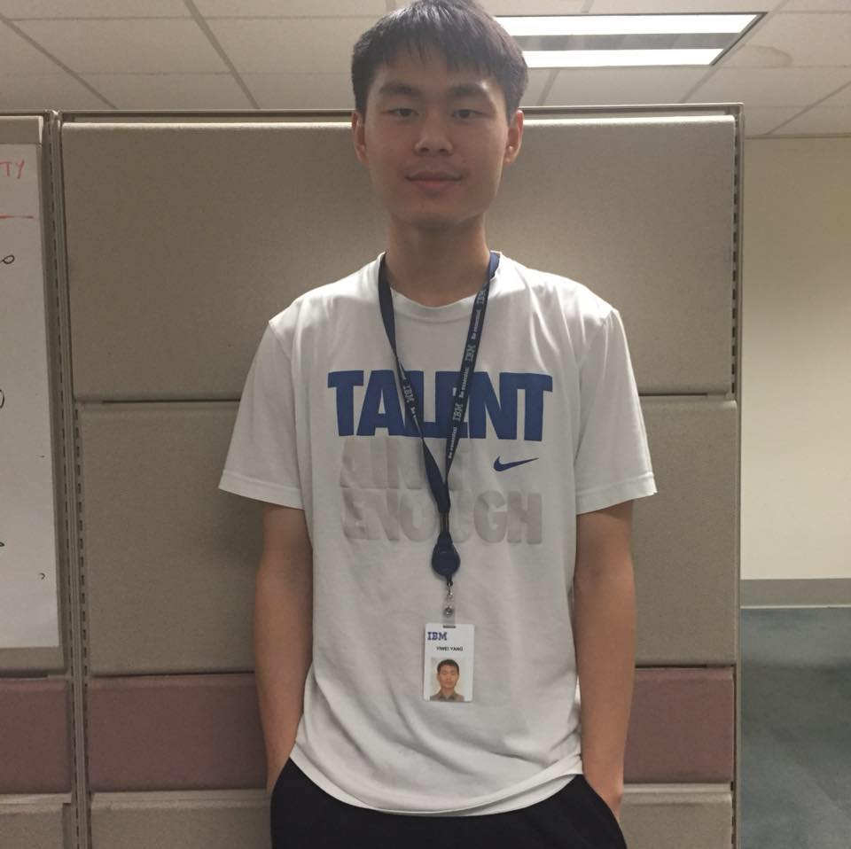

<div class="container about" style="padding-top: 50px;
    padding-right: 30px;
    padding-bottom: 50px;
    padding-left: 80px;">

  <div class="row">
    <div class="col">
      
    </div>
      
    <div class="col-2">
      <h1>Hi! I'm <strong>Yiwei Yang.</strong></h1>
      
      <p style="font-size:20px;">I am a 4th year undergraduate student at the <a href="http://umich.edu/">University of Michigan</a>, and am currently doing research with Professor Walter Lasecki in the 
        <a href="http://web.eecs.umich.edu/~wlasecki/croma.html">CRO+MA(Crowds+Machines) lab</a>.
      </p>
      
      <p style="font-size:20px;">I am interested in the intersection of Human-Computer Interaction (HCI) and Artificial Intelligence (AI). 
        Specifically, I want to create Hybrid Intelligence systems that leverage both human and machine intelligence to tackle problems that cannot be solved by either alone.
      </p>
    </div>

  </div>
  

</div>
